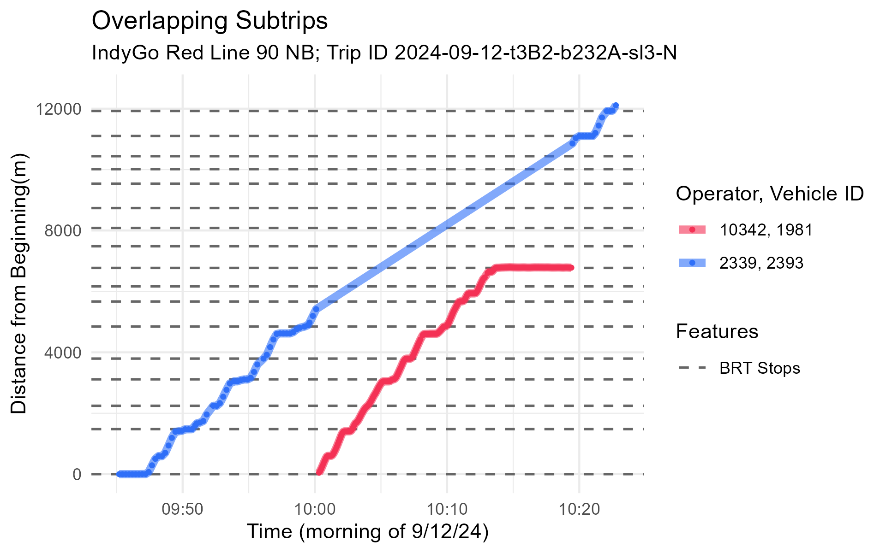
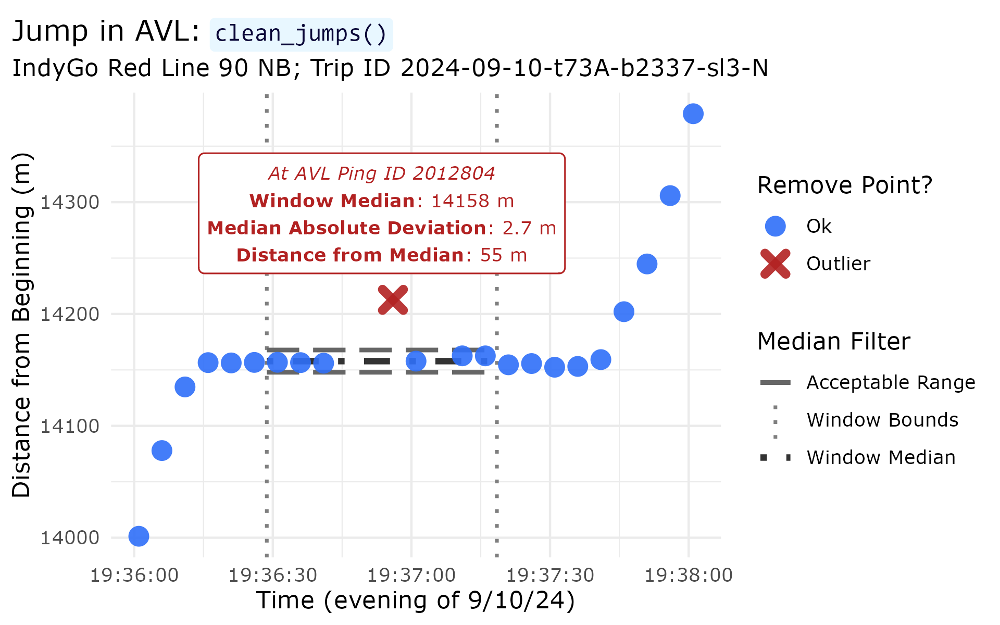
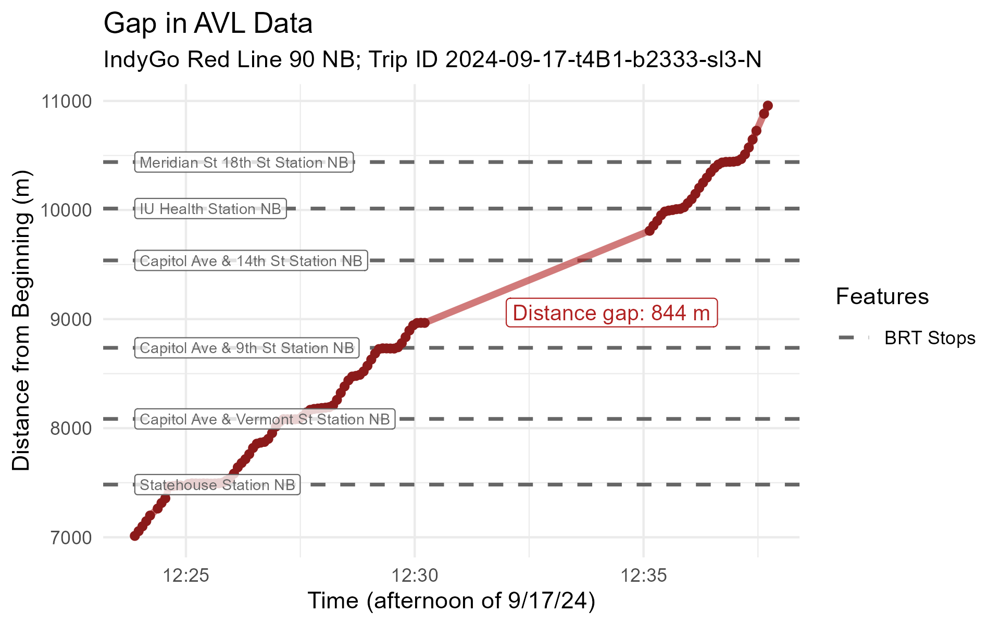
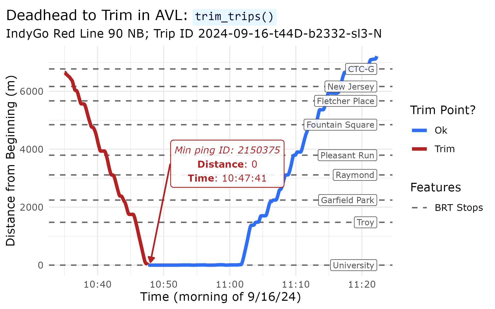
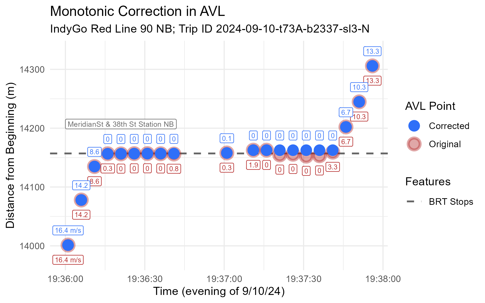
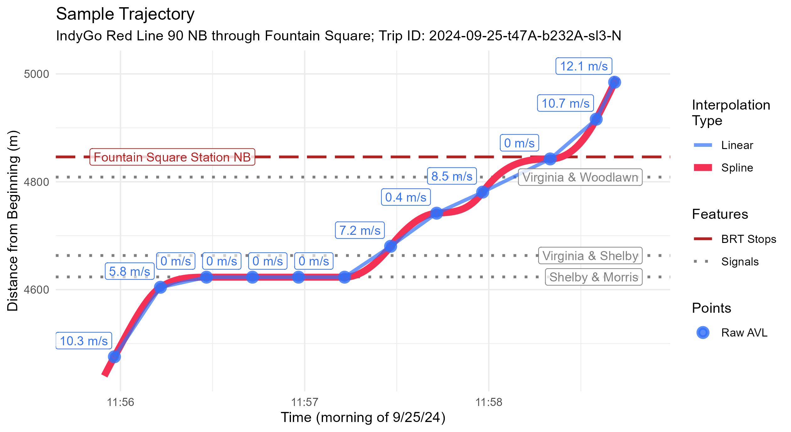
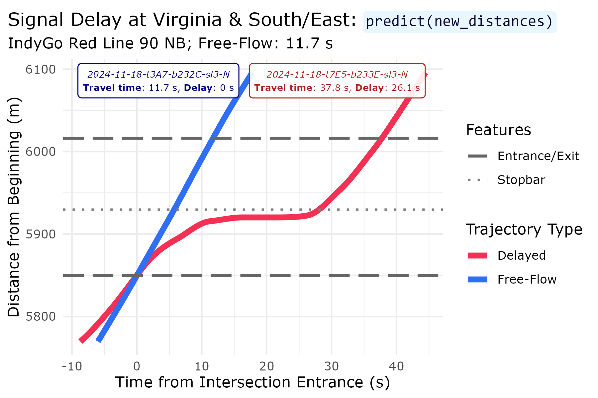
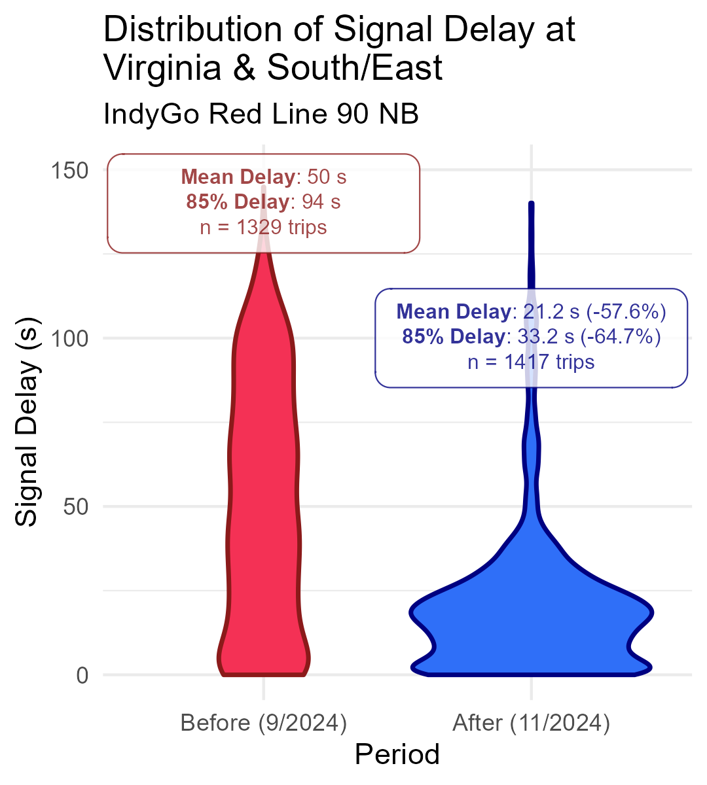
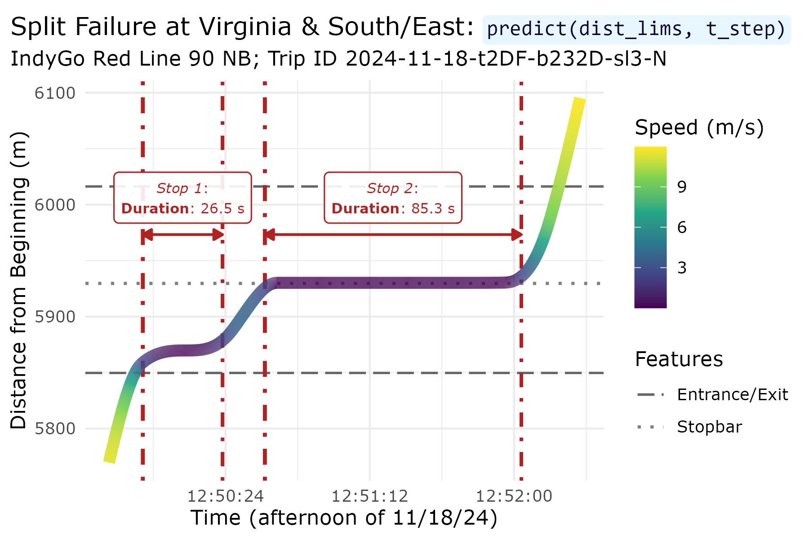
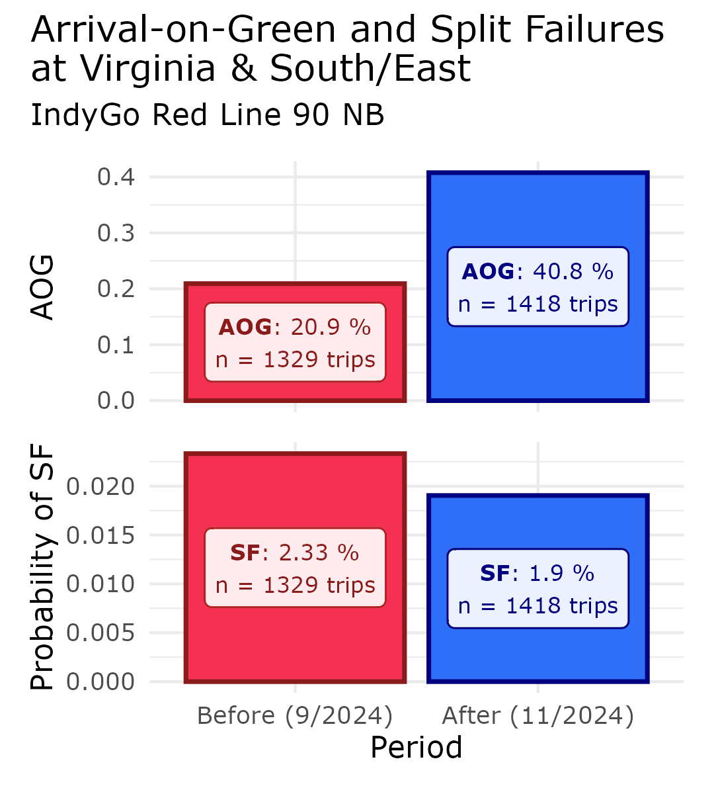

Introduction
Thanks for checking out transittraj! This article
contains all code that produced the figures and stats on our poster at
Transport Chicago 2026. As this is intended to supplement the poster
presentation, we will only minimally discuss our code here. If you have
additional questions, feel free to contact us:
Ben O’Brien: beno3@illinois.edu
Lewis Lehe: lehe@illinois.edu
Setup
The data we used here was shared with is privately by IndyGo via their Swiftly API endpoint. As such, we unfortunately cannot share the raw AVL data. We’ve pre-loaded the following IndyGo data into our RStudio workspace before running this vignette:
avl_df: The TIDES-compliantvehicle_locations.csvtable of historic AVL data. This includes all northbound Red Line (90N) trips made on weekdays in September and November 2024.route_geom: The Red Line’s northbound alignment, as retrieved from IndyGo’s GTFS viatransittraj::get_shape_geometry().stops: The distance of each northbound Red Line stop along its alignment, as retrieved from IndyGo’s GTFS viatransittraj::get_stop_distances().signalsandsignal_boundings: The distance of each northbound signal stopbar and entrance-exit analysis zone, respectively. These were identified using OpenStreetMap data and Google Earth satellite imagery, then projected onto the route viatransittraj::project_onto_route().
With this, we can load the packages we’ll need:
# For analysis:
devtools::load_all() # library(transittraj)
library(tidyverse)
# For plotting:
library(marquee)
library(patchwork)And we can set the parameters we’ll use for our data cleaning. Throughout the cleaning process, we’ll reference these names variables, rather than using numeric values.
# - Cleaning parameters -
indy_crs <- 32616 # WGS 84 UTM Zone 16N
route_buffer = 50 # meters
min_dist = 200 # meters
min_dur = 90 # seconds
dist_error = 0.00001 # meters
max_d_gap = 800 # meters
hampel_t = 2.5Proposed Workflow
Steps 1 & 2: Buffer & Project onto Route
Steps 1 and 2 share the same function,
get_linear_distances(), as they both require geospatial
analysis. There’s no need for the user to engage with spatial data,
though, as long as your input TIDES table (avl_df) has the
appropriate latitude and longitude numeric
columns.
# Get initial dims
n_obs <- dim(avl_df)[1]
n_trips <- length(unique(avl_df$trip_id_performed))
# - Step 1 & 2: Buffer & Linearize -
t_0 <- Sys.time()
distance_df <- get_linear_distances(avl_df = avl_df,
shape_geometry = route_geom,
clip_buffer = route_buffer,
project_crs = indy_crs) %>%
filter(distance < 20500) %>%
mutate(operator_id = as.character(operator_id))
t_f <- Sys.time()
# Save changes
dur <- c(NA,
as.numeric(difftime(t_f, t_0, units = "secs")))
n_obs <- append(n_obs,
dim(distance_df)[1])
n_trips <- append(n_trips,
length(unique(distance_df$trip_id_performed)))Step 3: Remove Overlapping Subtrips
First, run the step:
# - Step 3: Remove Overlap Subtrips -
t_0 <- Sys.time()
step3_df <- clean_overlapping_subtrips(distance_df = distance_df,
check_operator = TRUE,
return_removals = FALSE)
t_f <- Sys.time()
# Save changes
dur <- append(dur,
as.numeric(difftime(t_f, t_0, units = "secs")))
n_obs <- append(n_obs,
dim(step3_df)[1])
n_trips <- append(n_trips,
length(unique(step3_df$trip_id_performed)))Next, plot our example:
plot_trip <- "2024-09-12-t3B2-b232A-sl3-N"
plot_df <- distance_df %>%
filter(trip_id_performed == plot_trip) %>%
mutate(subtrip_id = paste(trip_id_performed, operator_id, vehicle_id,
sep = "-"),
op_veh = paste(operator_id, vehicle_id, sep = ", "))
step3_plot <- ggplot(data = plot_df) +
geom_hline(data = stops,
aes(yintercept = distance, linetype = "BRT Stops"),
color = "grey40", linewidth = 0.4) +
geom_line(aes(x = event_timestamp, y = distance, color = op_veh),
linewidth = 2, alpha = 0.6) +
geom_point(aes(x = event_timestamp, y = distance, color = op_veh),
size = 0.8, alpha = 1) +
scale_color_manual(name = "Operator,\nVehicle ID",
values = c("10342, 1981" = "#f43155",
"2339, 2393" = "#2f6ff8")) +
scale_linetype_manual(name = "Features",
values = c("BRT Stops" = "dashed")) +
ylim(c(0, 12500)) +
xlim(c(as.POSIXct("2024-09-12 09:45:00", tz = "America/New_York"),
as.POSIXct("2024-09-12 10:23:00", tz = "America/New_York"))) +
theme_minimal() +
labs(x = "Time (morning of 9/12/24)",
y = "Distance from Beginning(m)",
title = "Sub-Trips in AVL: `clean_overlapping_subtrips()`",
subtitle = paste("IndyGo Red Line 90 NB; Trip ID ", plot_trip,
sep = "")) +
theme(text = element_text(family = "Verdana"),
plot.title = element_marquee(style = code_style),
plot.title.position = "plot")
step3_plot
Step 4: Remove Outlying Jumps
First, run the step:
# - Step 4: Remove jumps -
t_0 <- Sys.time()
step4_df <- clean_jumps(distance_df = step3_df,
t_cutoff = hampel_t)
t_f <- Sys.time()
# Save changes
dur <- append(dur,
as.numeric(difftime(t_f, t_0, units = "secs")))
n_obs <- append(n_obs,
dim(step4_df)[1])
n_trips <- append(n_trips,
length(unique(step4_df$trip_id_performed)))Next, plot our example:
outliers <- clean_jumps(distance_df = step3_df,
t_cutoff = hampel_t,
return_removals = TRUE)
plot_trip <- "2024-09-10-t73A-b2337-sl3-N"
plot_df <- step3_df %>%
filter(trip_id_performed == plot_trip) %>%
filter((distance >= 14000) & (distance <= 14380)) %>%
select(event_timestamp, distance, location_ping_id) %>%
mutate(point_ok = if_else(condition = (location_ping_id %in% outliers$location_ping_id),
true = "Outlier",
false = "Ok"))
window_bounds <- data.frame(x = c(as.POSIXct("2024-09-10 19:36:28.7", tz = "America/New_York"),
as.POSIXct("2024-09-10 19:37:18.5", tz = "America/New_York")),
med = c(14157.86, 14157.86)) %>%
mutate(upr = med + (hampel_t * 2.69 * 1.48),
lwr = med - (hampel_t * 2.69 * 1.48))
lab_df <- data.frame(y = 14290,
x = mean(window_bounds$x),
lab = paste("*At AVL Ping ID 2012804*",
"**Window Median**: 14158 m",
"**Median Absolute Deviation**: 2.7 m",
"**Distance from Median**: 55 m",
sep = " \n"))
step4_plot <- ggplot(data = plot_df) +
geom_vline(data = window_bounds,
aes(xintercept = x, linetype = "Window Bounds"),
color = "grey50", linewidth = 0.8) +
geom_line(data = window_bounds,
aes(x = x, y = med, linetype = "Window Median"),
color = "grey20", linewidth = 1.4) +
geom_line(data = window_bounds,
aes(x = x, y = lwr, linetype = "Acceptable Range"),
color = "grey40", linewidth = 1) +
geom_line(data = window_bounds,
aes(x = x, y = upr, linetype = "Acceptable Range"),
color = "grey40", linewidth = 1) +
geom_point(aes(x = event_timestamp, y = distance,
color = point_ok, shape = point_ok),
size = 2.5, stroke = 3, alpha = 0.9) +
scale_color_manual(name = "Remove Point?",
values = c("Outlier" = "firebrick",
"Ok" = "#2f6ff8")) +
scale_shape_manual(name = "Remove Point?",
values = c("Outlier" = 4,
"Ok" = 16)) +
scale_linetype_manual(name = "Median Filter",
values = c("Window Bounds" = "dotted",
"Window Median" = "dotdash",
"Acceptable Range" = "longdash")) +
geom_marquee(data = lab_df,
aes(x = x, y = y, label = lab),
color = "firebrick", size = 3, hjust = 0.5,
style = lab_firebrick, fill = "white", alpha = 1,
family = "Verdana") +
theme_minimal() +
labs(x = "Time (evening of 9/10/24)",
y = "Distance from Beginning (m)",
title = "Jump in AVL: `clean_jumps()`",
subtitle = paste("IndyGo Red Line 90 NB; Trip ID ", plot_trip,
sep = "")) +
theme(text = element_text(family = "Verdana"),
plot.title = element_marquee(style = code_style),
plot.title.position = "plot")
step4_plot
Step 5: Remove Insufficient Trips
First, run the step:
# - Step 5: Clean insufficient trips -
t_0 <- Sys.time()
step5_df <- clean_incomplete_trips(distance_df = step4_df,
min_trip_distance = min_dist,
min_trip_duration = min_dur,
max_distance_gap = max_d_gap)
t_f <- Sys.time()
# Save changes
dur <- append(dur,
as.numeric(difftime(t_f, t_0, units = "secs")))
n_obs <- append(n_obs,
dim(step5_df)[1])
n_trips <- append(n_trips,
length(unique(step5_df$trip_id_performed)))Next, plot our example:
plot_trip <- "2024-09-17-t4B1-b2333-sl3-N"
plot_df <- step4_df %>%
filter(trip_id_performed == plot_trip) %>%
filter((distance >= 7000) & (distance <= 11000))
lab_df <- data.frame(lab = "**Distance gap**: 844 m",
y = 9060,
x = as.POSIXct("2024-09-17 12:32:00", tz = "America/New_York"))
step5_plot <- ggplot(data = plot_df) +
geom_hline(data = (stops %>% filter((distance >= 7000) & (distance <= 11000))),
aes(yintercept = distance, linetype = "BRT Stops"),
color = "grey40", linewidth = 0.6) +
geom_line(aes(x = event_timestamp, y = distance),
linewidth = 1.5, color = "firebrick", alpha = 0.6) +
geom_point(aes(x = event_timestamp, y = distance),
size = 1.5, color = "firebrick4") +
geom_label(data = (stops %>% filter((distance >= 7000) & (distance <= 11000))),
aes(x = plot_df$event_timestamp[1], y = distance, label = stop_name),
hjust = "left", nudge_y = 0, size = 2.8, color = "grey30", alpha = 0.9,
family = "Verdana") +
geom_marquee(data = lab_df,
aes(x = x, y = y, label = lab),
hjust = 0, color = "firebrick", size = 3.6, fill = "#FFFFFFE6",
family = "Verdana", style = lab_firebrick) +
scale_linetype_manual(name = "Features",
values = c("BRT Stops" = "dashed")) +
theme_minimal() +
labs(x = "Time (afternoon of 9/17/24)",
y = "Distance from Beginning (m)",
title = "Gap in AVL: `clean_incomplete_trips()`",
subtitle = paste("IndyGo Red Line 90 NB; Trip ID ", plot_trip,
sep = "")) +
theme(text = element_text(family = "Verdana"),
plot.title = element_marquee(style = code_style),
plot.title.position = "plot")
step5_plot
Step 6: Trip Trip Tails
First, run the step:
# - Step 6: Trim trip tails -
t_0 <- Sys.time()
step6_df <- trim_trips(distance_df = step5_df,
trim_type = "both")
#> Warning in trim_trips(distance_df = step5_df, trim_type = "both"): Trips found with maximum at or before minimum point -- potential wrong direction.
#> Removing the following: 2024-09-19-t407-b232F-sl3-N
t_f <- Sys.time()
# Save changes
dur <- append(dur,
as.numeric(difftime(t_f, t_0, units = "secs")))
n_obs <- append(n_obs,
dim(step6_df)[1])
n_trips <- append(n_trips,
length(unique(step6_df$trip_id_performed)))Next, plot our example:
trimmed <- trim_trips(distance_df = step5_df,
trim_type = "both",
return_removals = TRUE)
plot_trip <- "2024-09-16-t44D-b2332-sl3-N"
plot_df <- step5_df %>%
filter(trip_id_performed == plot_trip) %>%
filter(distance < 7250) %>%
mutate(point_ok = if_else(condition = (location_ping_id %in% trimmed$location_ping_id),
true = "Trim",
false = "Ok"))
lab_df <- plot_df %>%
filter(point_ok == "Ok") %>%
filter(location_ping_id == first(location_ping_id)) %>%
select(location_ping_id, event_timestamp, distance) %>%
mutate(lab = paste("*Min ping ID: ", location_ping_id, "*",
" \n**Distance**: ", distance,
" \n**Time**: ", strftime(event_timestamp,
format = "%H:%M:%S",
tz = "America/New_York"),
sep = ""),
x1 = as.POSIXct("2024-09-16 10:51:00",
tz = "America/New_York"),
x2 = as.POSIXct("2024-09-16 10:48:00",
tz = "America/New_York"),
y1 = 3500,
y2 = distance + 100) %>%
select(-c(location_ping_id, event_timestamp, distance))
data.frame(lab = paste("*Minimum ping ID: ", locat
sep = ""),
x = as.POSIXct("2024-09-16 10:5:37", tz = "America/New_York"),
y = 750)
step6_plot <- ggplot(data = plot_df) +
geom_hline(data = (stops %>% filter(distance <= 7250)),
aes(yintercept = distance, linetype = "BRT Stops"),
color = "grey40", linewidth = 0.6) +
geom_line(aes(x = event_timestamp, y = distance, color = point_ok),
linewidth = 1.5) +
scale_color_manual(name = "Trim Point?",
values = c("Trim" = "firebrick",
"Ok" = "#2f6ff8")) +
geom_label(data = (stops %>% filter((distance <= 7250))),
aes(x = max(plot_df$event_timestamp), y = distance, label = stop_name),
hjust = "right", size = 2.7, color = "grey30", alpha = 0.9,
family = "Verdana") +
geom_marquee(data = lab_df,
aes(x = x1, y = y1, label = lab),
hjust = 0, color = "firebrick", size = 3.1, fill = "#FFFFFFE6",
family = "Verdana", style = lab_firebrick) +
geom_segment(data = lab_df,
aes(x = x1, xend = x2,
y = y1, yend = y2),
arrow = arrow(ends = "last", type = "closed",
length = unit(0.025, units = "npc")),
color = "firebrick", linetype = "solid", linewidth = 0.7) +
scale_linetype_manual(name = "Features",
values = c("BRT Stops" = "dashed")) +
theme_minimal() +
labs(title = "Deadhead to Trim in AVL: `trim_trips()`",
subtitle = paste("IndyGo Red Line 90 NB; Trip ID ", plot_trip,
sep = ""),
x = "Time (morning of 9/16/24)",
y = "Distance from Beginning (m)") +
theme(text = element_text(family = "Verdana"),
plot.title = element_marquee(style = code_style),
plot.title.position = "plot")
step6_plot
Step 7: Correct Monotonicity
First, run the step:
# - Step 7: Correct monotonicty -
t_0 <- Sys.time()
step7_df <- make_monotonic(distance_df = step6_df,
correct_speed = TRUE,
add_distance_error = dist_error)
t_f <- Sys.time()
# Save changes
dur <- append(dur,
as.numeric(difftime(t_f, t_0, units = "secs")))
n_obs <- append(n_obs,
dim(step7_df)[1])
n_trips <- append(n_trips,
length(unique(step7_df$trip_id_performed)))Next, plot our example:
plot_trip <- "2024-09-10-t73A-b2337-sl3-N"
plot_df1 <- step6_df %>%
filter(trip_id_performed == plot_trip) %>%
filter((distance >= 14000) & (distance <= 14320)) %>%
mutate(speed_lab = if_else(condition = (distance == min(distance)),
true = paste(round(speed, 1), " m/s", sep = ""),
false = paste(round(speed, 1))))
plot_df2 <- step7_df %>%
filter(trip_id_performed == plot_trip) %>%
filter((distance >= 14000) & (distance <= 14320)) %>%
mutate(speed_lab = if_else(condition = (distance == min(distance)),
true = paste(round(speed, 1), " m/s", sep = ""),
false = paste(round(speed, 1))))
step7_plot <- ggplot(data = plot_df1) +
geom_hline(data = (stops %>% filter((distance >= 14000) & (distance <= 14320))),
aes(yintercept = distance, linetype = "BRT Stops"),
color = "grey40", linewidth = 0.8) +
geom_point(aes(x = event_timestamp, y = distance,
color = "Original", fill = "Original"),
size = 4, stroke = 2, alpha = 0.4, shape = 21) +
geom_point(data = plot_df2,
aes(x = event_timestamp, y = distance,
color = "Corrected", fill = "Corrected"),
size = 2.3, stroke = 2, alpha = 1, shape = 21) +
geom_label(aes(x = event_timestamp, y = distance,
color = "Original", label = speed_lab),
nudge_y = -25, size = 2, alpha = 0.9, show.legend = FALSE,
family = "Verdana") +
geom_label(data = plot_df2,
aes(x = event_timestamp, y = distance,
color = "Corrected", label = speed_lab),
nudge_y = 25, size = 2, alpha = 0.9, show.legend = FALSE,
family = "Verdana") +
geom_segment(aes(x = as.POSIXct("2024-09-10 19:36:05",
tz = "America/New_York"),
xend = as.POSIXct("2024-09-10 19:36:00",
tz = "America/New_York"),
y = 14217, yend = 14157),
arrow = arrow(ends = "last", type = "closed",
length = unit(0.025, units = "npc")),
color = "grey30", linetype = "solid", linewidth = 0.7) +
geom_label(data = (stops %>% filter((distance >= 14000) & (distance <= 14320))),
aes(x = as.POSIXct("2024-09-10 19:36:05", tz = "America/New_York"),
y = 14157, label = stop_name),
color = "grey30", size = 3, alpha = 0.9, hjust = "left",
nudge_y = 60, family = "Verdana") +
scale_color_manual(name = "AVL Point",
values = c("Original" = "firebrick",
"Corrected" = "#2f6ff8")) +
scale_fill_manual(name = "AVL Point",
values = c("Original" = "firebrick",
"Corrected" = "#2f6ff8")) +
scale_linetype_manual(name = "Features",
values = c("BRT Stops" = "dashed")) +
theme_minimal() +
labs(x = "Time (evening of 9/10/24)",
y = "Distance from Beginning (m)",
title = "Monotonic Correction in AVL: `make_monotonic()`",
subtitle = paste("IndyGo Red Line 90 NB; Trip ID ", plot_trip,
sep = "")) +
theme(text = element_text(family = "Verdana"),
plot.title = element_marquee(style = code_style),
plot.title.position = "plot")
step7_plot
Fit Interpolating Curve
First, run the step:
# Run
t_0 <- Sys.time()
traj <- get_trajectory_fun(distance_df = step7_df)
t_f <- Sys.time()
# Get info
dur <- append(dur,
as.numeric(difftime(t_f, t_0, units = "secs")))
n_obs <- append(n_obs, NA)
n_trips <- append(n_trips,
length(unclass(traj)))Next, plot our example:
plot_trip <- "2024-09-25-t47A-b232A-sl3-N"
plot_lims <- c(4440, 5000)
traj_df <- predict(object = traj,
trip = plot_trip,
distance_lims = plot_lims,
timestep = 1) %>%
rename(distance = interp) %>%
mutate(event_timestamp = as.POSIXct(event_timestamp, tz = "America/New_York"))
point_df <- distance_df %>%
filter(trip_id_performed == plot_trip) %>%
filter((distance >= plot_lims[1]) & (distance <= plot_lims[2])) %>%
mutate(speed_lab = if_else(condition = (distance == min(distance)),
true = paste(round(speed, 1), " m/s", sep = "\n"),
false = paste(round(speed, 1))))
traj_plot <- ggplot() +
geom_hline(data = (stops %>% filter((distance >= plot_lims[1]) & (distance <= plot_lims[2]))),
aes(yintercept = distance, linetype = "BRT Stops"),
color = "firebrick", linewidth = 1) +
geom_hline(data = (signals %>% filter((distance >= plot_lims[1]) & (distance <= plot_lims[2]))),
aes(yintercept = distance, linetype = "Signals"),
color = "grey50", linewidth = 1) +
geom_line(data = traj_df,
aes(x = event_timestamp, y = distance, color = "Spline"),
linewidth = 2.5, alpha = 1) +
geom_line(data = point_df,
aes(x = event_timestamp, y = distance, color = "Linear"),
linewidth = 1.3, alpha = 0.8) +
geom_point(data = point_df,
aes(x = event_timestamp, y = distance, shape = "Raw AVL"),
color = "#2f6ff8", fill = "#2f6ff8", size = 2, stroke = 2, alpha = 0.8) +
geom_label(data = point_df,
aes(x = event_timestamp, y = distance, label = speed_lab),
color = "#2f6ff8", size = 3.4, alpha = 0.8, nudge_y = 30, nudge_x = -7,
family = "Verdana") +
geom_label(data = (stops %>% filter((distance >= plot_lims[1]) & (distance <= plot_lims[2]))),
aes(x = as.POSIXct("2024-09-25 11:55:50", tz = "America/New_York"),
y = distance, label = stop_name),
color = "firebrick", size = 3.4, hjust = "left", alpha = 0.9,
family = "Verdana") +
geom_label(data = (signals %>% filter((distance >= plot_lims[1]) & (distance <= plot_lims[2]))),
aes(x = as.POSIXct("2024-09-25 11:58:58", tz = "America/New_York"),
y = distance, label = name),
color = "grey30", size = 3.3, hjust = "right", nudge_y = -0, alpha = 0.9,
family = "Verdana") +
scale_linetype_manual(name = "Features",
values = c("BRT Stops" = "longdash",
"Signals" = "dotted")) +
scale_shape_manual(name = "Points",
values = c("Raw AVL" = 21)) +
scale_color_manual(name = "Interpolation\nType",
values = c("Spline" = "#f43155",
"Linear" = "#2f6ff8")) +
theme_minimal() +
labs(x = "Time (morning of 9/25/24)",
y = "Distance from Beginning (m)",
title = "Final Trajectory: `get_trajectory_fun()`",
subtitle = paste("IndyGo Red Line 90 NB through Fountain Square; Trip ID: ", plot_trip,
sep = "")) +
theme(text = element_text(family = "Verdana"),
plot.title = element_marquee(style = code_style),
plot.title.position = "plot")
traj_plot
Summary
Summary table with observation & trip counts & changes:
cleaning_summ <- data.frame(step = c("Init", "1 & 2", "3", "4",
"5", "6", "7", "Final"),
n_obs = n_obs,
n_trips = n_trips,
t_sec = dur) %>%
mutate(delta_n = n_obs - lag(n_obs),
perc_n = delta_n / lag(n_obs) * 100,
delta_trips = n_trips - lag(n_trips),
perc_trips = delta_trips / lag(n_trips) * 100)
print(cleaning_summ)
#> step n_obs n_trips t_sec delta_n perc_n delta_trips perc_trips
#> 1 Init 1626581 3177 NA NA NA NA NA
#> 2 1 & 2 1338872 3173 304.4231269 -287709 -17.6879602 -4 -0.12590494
#> 3 3 1332860 3158 1.5231349 -6012 -0.4490347 -15 -0.47273873
#> 4 4 1330548 3158 54.2799110 -2312 -0.1734616 0 0.00000000
#> 5 5 1248044 2897 0.7932529 -82504 -6.2007534 -261 -8.26472451
#> 6 6 1241429 2896 0.3037698 -6615 -0.5300294 -1 -0.03451847
#> 7 7 1241429 2896 196.2748561 0 0.0000000 0 0.00000000
#> 8 Final NA 2896 35.6595669 NA NA 0 0.00000000Finding the total time, in seconds:
Example Applications
Signal Delay
We’ll use the transittraj predict() method
with the new_distances parameter set to the entrance &
exit position of the study signal.
# Get data for analysis signal
plot_sig <- "Virginia & South/East"
plot_sig_boundings <- signal_boundings %>%
filter(name == plot_sig)
# Get crossing times of all trips
t_0 <- Sys.time()
sig_crossings <- predict(object = traj,
new_distances = plot_sig_boundings)
t_f <- Sys.time()
print(t_f - t_0)
#> Time difference of 1.381556 secsPivot to calculate travel times & delays:
t_ff <- 11.7
sig_tt <- sig_crossings %>%
pivot_wider(id_cols = "trip_id_performed", names_from = "inout",
values_from = "interp") %>%
mutate(travel_time = exit - enter,
delay = pmax(0,
travel_time - t_ff),
trip_month = substr(trip_id_performed,
start = 6, stop = 7)) %>%
filter(!is.na(travel_time))
plot_trips <- c("2024-11-18-t3A7-b232C-sl3-N",
"2024-11-18-t7E5-b233E-sl3-N")
# Get spatial attributes for signal
offset_dist_up <- 80 # meters
offset_dist_down <- 80 # meters
sig_in <- plot_sig_boundings$distance[1]
sig_out <- plot_sig_boundings$distance[2]
y_min <- sig_in - offset_dist_up
y_max <- sig_out + offset_dist_down
stopbars_filt <- signals %>%
filter((distance >= y_min) & (distance <= y_max)) %>%
dplyr::select(name, distance)
# Get trajectory points to plot
time_int = 0.1 # second
interp_df <- predict(object = traj,
distance_lims = c(y_min, y_max),
timestep = time_int,
trips = plot_trips) %>%
rename(distance = interp)
center_vals <- interp_df %>%
group_by(trip_id_performed) %>%
summarize(t = which.min(abs(distance - sig_in)))
plot_df <- interp_df %>%
left_join(center_vals, by = "trip_id_performed") %>%
group_by(trip_id_performed) %>%
mutate(t_start = event_timestamp[t],
t_norm = event_timestamp - t_start,
traj_type = if_else(condition = (trip_id_performed == plot_trips[1]),
true = "Free-Flow",
false = "Delayed")) %>%
ungroup()
# Get label for plot
plot_vals <- sig_tt %>%
filter(trip_id_performed %in% plot_trips) %>%
select(trip_id_performed, travel_time, delay) %>%
mutate(travel_time = round(travel_time, 1),
delay = round(delay, 1))
lab_df <- plot_vals %>%
left_join(y = (plot_df %>%
group_by(trip_id_performed) %>%
summarize(t_max = max(t_norm),
y_max = max(distance),
traj_type = first(traj_type))),
by = "trip_id_performed") %>%
mutate(delay = if_else(condition = (delay < 1),
true = 0,
false = delay),
lab = paste("*", trip_id_performed, "* \n",
"**Travel time**: ", travel_time, " s, **Delay**: ", delay, " s",
sep = ""),
x = if_else(condition = (trip_id_performed == plot_trips[1]),
true = t_max - 2,
false = t_max))
# Create the plot
delay_plot <- ggplot() +
geom_line(data = plot_df,
aes(x = t_norm, y = distance, color = traj_type),
linetype = "solid", linewidth = 2) +
geom_hline(aes(yintercept = sig_in, linetype = "Entrance/Exit"),
color = "grey40", linewidth = 1) +
geom_hline(aes(yintercept = sig_out, linetype = "Entrance/Exit"),
color = "grey40", linewidth = 1) +
geom_hline(data = stopbars_filt,
aes(yintercept = distance, linetype = "Stopbar"),
linewidth = 0.8, color = "grey50") +
geom_marquee(data = lab_df %>% filter(trip_id_performed == plot_trips[1]),
aes(x = x, y = (y_max - 10), label = lab),
size = 2.3, hjust = 1, style = lab_navy, family = "Verdana",
color = "navy", fill = "#FFFFFFE6",
show.legend = FALSE) +
geom_marquee(data = lab_df %>% filter(trip_id_performed == plot_trips[2]),
aes(x = x, y = (y_max - 10), label = lab),
size = 2.3, hjust = 1, style = lab_firebrick, family = "Verdana",
color = "firebrick", fill = "#FFFFFFE6",
show.legend = FALSE) +
scale_color_manual(name = "Trajectory Type",
values = c("Free-Flow" = "#2f6ff8",
"Delayed" = "#f43155")) +
scale_linetype_manual(name = "Features",
values = c("Entrance/Exit" = "longdash",
"Stopbar" = "dotted")) +
theme_minimal() +
labs(x = "Time from Intersection Entrance (s)",
y = "Distance from Beginning (m)",
title = paste("Signal Delay at ", plot_sig,
": `predict(new_distances)`",
sep = ""),
subtitle = paste("IndyGo Red Line 90 NB; Free-Flow: ", lab_df$travel_time[1], " s",
sep = "")) +
theme(text = element_text(family = "Verdana"),
plot.title = element_marquee(style = code_style),
plot.title.position = "plot")
delay_plot
Show before/after change using violin plots:
plot_df <- sig_tt %>%
filter(grepl(pattern = "2024-09-", x = trip_id_performed) |
grepl(pattern = "2024-11-", x = trip_id_performed)) %>%
mutate(period = if_else(condition = grepl(pattern = "2024-09-", x = trip_id_performed),
true = "Before (9/2024)",
false = "After (11/2024)"),
period = factor(x = period,
levels = c("Before (9/2024)", "After (11/2024)")))
lab_df <- plot_df %>%
group_by(period) %>%
summarize(mean_delay = round(mean(delay), 1),
delay_85th = round(quantile(delay, 0.85), 1),
n_trips = n()) %>%
ungroup() %>%
mutate(delta_mean = round(((mean_delay[2] - mean_delay[1]) / mean_delay[1]) * 100, 1),
delta_85th = round(((delay_85th[2] - delay_85th[1]) / delay_85th[1]) * 100, 1),
lab = if_else(condition = (period == "Before (9/2024)"),
true = paste("**Mean Delay**: ", mean_delay, " s \n**85% Delay**: ", delay_85th, " s", " \nn = ", n_trips, " trips",
sep = ""),
false = paste("**Mean Delay**: ", mean_delay, " s (", delta_mean, "%) \n**85% Delay**: ", delay_85th, " s (", delta_85th, "%)", " \nn = ", n_trips, " trips",
sep = "")),
y = c(140, 100))
delay_violin <- ggplot() +
geom_violin(data = plot_df,
aes(x = period, y = delay, fill = period, color = period),
show.legend = FALSE, linewidth = 0.8) +
geom_marquee(data = lab_df %>% filter(period == "Before (9/2024)"),
aes(x = period, y = y, label = lab, color = period),
size = 2.4, hjust = 0.5, family = "Verdana",
style = lab_firebrick, fill = "#FFFFFFE6",
show.legend = FALSE) +
geom_marquee(data = lab_df %>% filter(period == "After (11/2024)"),
aes(x = period, y = y, label = lab, color = period),
size = 2.4, hjust = 0.5, family = "Verdana",
style = lab_navy, fill = "#FFFFFFE6",
show.legend = FALSE) +
scale_fill_manual(values = c("Before (9/2024)" = "#f43155",
"After (11/2024)" = "#2f6ff8")) +
scale_color_manual(values = c("Before (9/2024)" = "firebrick4",
"After (11/2024)" = "navy")) +
theme_minimal() +
labs(x = "Period",
y = "Signal Delay (s)",
title = "Distribution of Signal Delay\nat Virginia & South/East",
subtitle = "IndyGo Red Line 90 NB") +
ylim(c(0, 150)) +
theme(text = element_text(family = "Verdana"),
plot.title.position = "plot")
delay_violin
Arrival-on-Green & Split Failures
For both of these metric’s, we’ll want to know how many stops each
trip made. We will use the predict() method with the
distance_lims and timestep inputs to
interpolate points for each trip at a fine resolution, then use
run-length-encoding to identify continuous stretches the vehicle spends
stopped (or in motion). We will consider any speed below 2.24 m/s (5
mph) to be a stop.
timestep = 0.1 # seconds
# Predict: get distances & speeds
t_0 <- Sys.time()
trip_dists <- predict(object = traj,
distance_lims = plot_sig_boundings$distance,
timestep = timestep,
deriv = c(0, 1))
t_f <- Sys.time()
print(t_f - t_0)
#> Time difference of 42.47312 secs
# Pivot wider: give dist & speed separate columns
trip_dists_piv <- trip_dists %>%
pivot_wider(id_cols = c("trip_id_performed", "event_timestamp"),
names_from = "deriv", names_glue = "interp_{.name}",
values_from = "interp") %>%
rename(distance = interp_0,
speed = interp_1)
# Set up RLE
stop_cutoff <- 2.235 # 1.341 # m/s, roughly 5 mph
stopped_rle_fun <- function(is_stopped, trip_id_performed) {
rle_obj <- rle(x = is_stopped)
out_vec <- rep(x = seq_along(rle_obj$values), times = rle_obj$length)
return(out_vec)
}
# RLE
trip_stops <- trip_dists_piv %>%
mutate(is_stopped = as.numeric(speed < stop_cutoff)) %>%
arrange(trip_id_performed, event_timestamp) %>%
group_by(trip_id_performed) %>%
mutate(run_index = stopped_rle_fun(is_stopped = is_stopped),
run_id = paste(trip_id_performed, run_index,
sep = "-")) %>%
ungroup()
trip_events <- trip_stops %>%
group_by(run_id) %>%
summarize(trip_id_performed = first(trip_id_performed),
is_stopped = max(is_stopped),
time_begin = min(event_timestamp),
time_end = max(event_timestamp),
dist_begin = min(distance),
dist_end = max(distance),
dist_traveled = dist_end - dist_begin,
time_elapsed = time_end - time_begin)
trip_sig_stops <- trip_events %>%
group_by(trip_id_performed) %>%
summarize(num_stops = sum(is_stopped),
.groups = "keep") %>%
mutate(makes_stop = as.numeric(num_stops > 0),
makes_multiple_stops = as.numeric(num_stops > 1),
period = if_else(condition = grepl(pattern = "2024-09-", x = trip_id_performed),
true = "Before (9/2024)",
false = "After (11/2024)"),
period = factor(x = period,
levels = c("Before (9/2024)", "After (11/2024)")))
# Calculate AOG & SFs by time period
aog <- trip_sig_stops %>%
group_by(period) %>%
summarize(num_trips = n(),
num_stops = sum(makes_stop),
.groups = "keep") %>%
mutate(num_thrus = num_trips - num_stops,
est_AOG = num_thrus / num_trips)
split_failures <- trip_sig_stops %>%
group_by(period) %>%
summarize(num_trips = n(),
num_mult_stops = sum(makes_multiple_stops),
.groups = "keep") %>%
mutate(sf = num_mult_stops / num_trips)Plot example trajectory:
plot_trip <- "2024-11-18-t2DF-b232D-sl3-N"
dist_df <- predict(object = traj,
distance_lims = c(y_min, y_max),
timestep = timestep,
trip = plot_trip) %>%
rename(distance = interp)
plot_df <- predict(object = traj,
new_times = dist_df,
deriv = 1) %>%
rename(speed = interp) %>%
mutate(event_timestamp = as.POSIXct(event_timestamp, tz = "America/New_York"))
stop_df <- trip_events %>%
filter((trip_id_performed == plot_trip) & (is_stopped == 1)) %>%
select(time_begin, time_end, time_elapsed) %>%
mutate(time_elapsed = round(time_elapsed, 1),
lab = paste("*Stop ", row_number(), "*: \n",
"**Duration**: ", time_elapsed, " s",
sep = ""),
x = (time_begin + time_end) / 2,
y = sig_out - 10)
sf_plot <- ggplot() +
geom_hline(aes(yintercept = sig_in, linetype = "Entrance/Exit"),
color = "grey40", linewidth = 0.6) +
geom_hline(aes(yintercept = sig_out, linetype = "Entrance/Exit"),
color = "grey40", linewidth = 0.6) +
geom_vline(data = stop_df,
aes(xintercept = time_begin),
color = "firebrick", linewidth = 1, linetype = "dotdash") +
geom_vline(data = stop_df,
aes(xintercept = time_end),
color = "firebrick", linewidth = 0.9, linetype = "dotdash") +
geom_hline(data = stopbars_filt,
aes(yintercept = distance, linetype = "Stopbar"),
linewidth = 0.8, color = "grey50") +
geom_line(data = plot_df,
aes(x = event_timestamp, y = distance, color = speed),
linewidth = 3) +
geom_segment(data = stop_df,
aes(x = time_begin, xend = time_end, y = (y - 33), yend = (y - 33)),
arrow = arrow(ends = "both", type = "closed", length = unit(0.025, units = "npc")),
color = "firebrick", linetype = "solid", linewidth = 0.7) +
geom_marquee(data = stop_df,
aes(x = x, y = y, label = lab),
hjust = 0.5, size = 2.6, color = "firebrick", fill = "#FFFFFFE6",
style = lab_firebrick, family = "Verdana") +
scale_linetype_manual(name = "Features",
values = c("Entrance/Exit" = "longdash",
"Stopbar" = "dotted")) +
scale_color_viridis_c(name = "Speed (m/s)") +
scale_x_time(date_labels = "%H:%M:%S") +
theme_minimal() +
labs(x = "Time (afternoon of 11/18/24)",
y = "Distance from Beginning (m)",
title = "Split Failure at Virginia & South/East: `predict(dist_lims, t_step)`",
subtitle = paste("IndyGo Red Line 90 NB; Trip ID ", plot_trip,
sep = "")) +
theme(text = element_text(family = "Verdana"),
plot.title = element_marquee(style = code_style),
plot.title.position = "plot")
sf_plot
Plot changes in AOG & SF:
aog_lab <- aog %>%
mutate(lab = paste("**AOG**: ", round(est_AOG * 100, 1), " % \nn = ", num_trips, " trips",
sep = ""),
y = est_AOG / 2)
sf_lab <- split_failures %>%
mutate(lab = paste("**SF**: ", round(sf * 100, 2), " % \nn = ", num_trips, " trips",
sep = ""),
y = sf / 2)
aog_plot <- ggplot() +
geom_col(data = aog,
aes(x = period, y = est_AOG,
color = period, fill = period),
linewidth = 0.8, show.legend = FALSE) +
geom_marquee(data = aog_lab %>% filter(period == "Before (9/2024)"),
aes(x = period, y = y, label = lab, color = period),
size = 2.8, fill = "#FFFFFFE6", show.legend = FALSE,
style = lab_firebrick, family = "Verdana") +
geom_marquee(data = aog_lab %>% filter(period == "After (11/2024)"),
aes(x = period, y = y, label = lab, color = period),
size = 2.8, fill = "#FFFFFFE6", show.legend = FALSE,
style = lab_navy, family = "Verdana") +
scale_fill_manual(values = c("Before (9/2024)" = "#f43155",
"After (11/2024)" = "#2f6ff8")) +
scale_color_manual(values = c("Before (9/2024)" = "firebrick4",
"After (11/2024)" = "navy")) +
theme_minimal() +
labs(y = "AOG") +
scale_x_discrete(name = NULL, labels = NULL) +
theme(text = element_text(family = "Verdana"))
sf_plot <- ggplot() +
geom_col(data = split_failures,
aes(x = period, y = sf,
color = period, fill = period),
linewidth = 0.8, show.legend = FALSE) +
geom_marquee(data = sf_lab %>% filter(period == "Before (9/2024)"),
aes(x = period, y = y, label = lab, color = period),
size = 2.8, fill = "#FFFFFFE6", show.legend = FALSE,
style = lab_firebrick, family = "Verdana") +
geom_marquee(data = sf_lab %>% filter(period == "After (11/2024)"),
aes(x = period, y = y, label = lab, color = period),
size = 2.8, fill = "#FFFFFFE6", show.legend = FALSE,
style = lab_navy, family = "Verdana") +
scale_fill_manual(values = c("Before (9/2024)" = "#f43155",
"After (11/2024)" = "#2f6ff8")) +
scale_color_manual(values = c("Before (9/2024)" = "firebrick4",
"After (11/2024)" = "navy")) +
theme_minimal() +
labs(x = "Period",
y = "Probability of SF") +
theme(text = element_text(family = "Verdana"))
combo_plot <- (aog_plot / sf_plot) +
plot_annotation(title = "Arrival-on-Green and Split Failures\nat Virginia & South/East",
subtitle = "IndyGo Red Line 90 NB",
theme = theme(text = element_text(family = "Verdana")))
combo_plot
Animations
A final component of transittraj worth demonstrating,
but difficult to show on a poster, are animations. We support two
types:
Animated map: This draws the vehicle’s route spatially, then uses the trajectory to show the each vehicle moving through space over time. The result will be similar to animated raw GPS points, but with the cleaning and interpolation curve we performed earlier.
Animated line: This is similar, but simplifies the route to a single, vertical line on a blank background. This is a good option for visualizing the trajectory without adding unneeded spatial context.
In this section, we’ll demonstrate each by animating trajectories
with the average travel times before and after the TSP upgrade. We’ll
begin by setting up some dataframes used to format our features. For
more discussion on how this works, see
help(plot_animated_map) and
vignette("articles/intro-trajectories-la").
# One DF for all features
plot_features <- rbind(
signal_boundings %>%
filter(name == model_sig) %>%
select(distance) %>%
mutate(feature = "Entrance/Exit"),
signals %>%
filter(name == model_sig) %>%
select(distance) %>%
mutate(feature = "Stopbar")
) %>%
rename(Feature = feature)
# Trips to plot
plot_trips <- c("2024-07-01-t416-b232E-sl3-N", # mean travel time before
"2024-11-29-t79F-b2339-sl3-N") # mean travel time after
# Vehicle & feature formatting DFs
veh_format <- data.frame(Period = c("Before", "After"), # `trip_id_performed = plot_trips`
shape = c(21, 23),
outline = c(my_red, my_blue))
feat_format <- plot_features %>%
mutate(shape = c(4, 4, 20)) %>%
select(Feature, shape)Animated Map
We’ll begin with an animated map. This requires our trajectory object and route geometry.
# Create base animation
map_anim <- plot_animated_map(
# Setup traj data
trajectory = traj, plot_trips = plot_trips, center_vehicles = TRUE,
# Spatial data
shape_geometry = route_geom, distance_lims = plot_lims, bbox_expand = 20,
# Route formatting
route_color = "red4", route_width = 2.7,
# Vehicle formatting
veh_shape = veh_format, veh_outline = veh_format,
veh_stroke = 2.5, veh_alpha = 0.9,
# Feature formatting
feature_distances = plot_features,
feature_outline = "grey50", feature_shape = feat_format,
feature_stroke = 2, feature_size = 3
)
# Add plot formatting
map_anim <- map_anim +
labs(y = "Distance (m)",
title = "Average trips: `plot_animated_map()`")
map_anim#> Warning: package 'vembedr' was built under R version 4.4.3
#>
#> Attaching package: 'vembedr'
#> The following object is masked from 'package:lubridate':
#>
#> hmsAnimated Line
Next, we can make our animated line. This will look almost identical, but does not need the route geometry.
# Create base animation
line_anim <- plot_animated_map(
# Setup traj data
trajectory = traj, plot_trips = plot_trips, center_vehicles = TRUE,
# Spatial data
distance_lims = plot_lims,
# Route formatting
route_color = "red4", route_width = 2.5,
# Vehicle formatting
veh_shape = veh_format, veh_outline = veh_format,
veh_stroke = 2.5, veh_alpha = 0.9,
# Feature formatting
feature_distances = plot_features,
feature_outline = "grey50", feature_shape = feat_format,
feature_stroke = 2, feature_size = 3
)
# Add plot formatting
line_anim <- line_anim +
labs(y = "Distance (m)",
title = "Average trips: `plot_animated_line()`")
line_animReferences
[1] M. M. Garcez Duarte and M. Sakr, “An experimental study of existing tools for outlier detection and cleaning in trajectories,” Geoinformatica, vol. 29, no. 1, pp. 31–51, Jan. 2025, doi: 10.1007/s10707-024-00522-y.
[2] R. K. Pearson, Y. Neuvo, J. Astola, and M. Gabbouj, “Generalized Hampel Filters,” EURASIP J. Adv. Signal Process., vol. 2016, no. 1, p. 87, Aug. 2016, doi: 10.1186/s13634-016-0383-6.
[3] J. Robbennolt, S. Munira, and S. D. Boyles, “A Comparative Study of Spline-Based Trajectory Reconstruction Methods Across Varying Automatic Vehicle Location Data Densities,” presented at the 2026 Transportation Research Board Annual Meeting, Washington, D.C.: arXiv, Jan. 2026. doi: 10.48550/arXiv.2509.00119.
[4] F. N. Fritsch and J. Butland, “A Method for Constructing Local Monotone Piecewise Cubic Interpolants,” SIAM Journal on Scientific and Statistical Computing, Jul. 2006, doi: 10.1137/0905021.
[5] Y. Huang, A. Abdelhalim, A. Stewart, J. Zhao, and H. Koutsopoulos, “Reconstructing Transit Vehicle Trajectory Using High-Resolution GPS Data,” presented at the 2023 IEEE 26th International Conference on Intelligent Transportation Systems (ITSC), Bilbao, Spain, 2023, pp. 5247-5253. https://dspace.mit.edu/handle/1721.1/156441
[6] Transportation Research Board and E. National Academies of Sciences and Medicine, Performance-Based Management of Traffic Signals. Washington, DC: The National Academies Press, 2020. doi: 10.17226/25875.
[7] J. Jackson, R. Huang, P. Koonce, and E. Burkman, “Use of High-Resolution Signal Controller Data to Measure Transit Signal Priority Performance: A Case Study in the Boston Region,” Transportation Research Record, vol. 2678, no. 6, pp. 138–149, Jun. 2024, doi: 10.1177/03611981231194345.